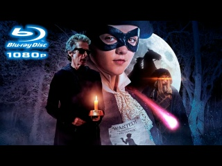
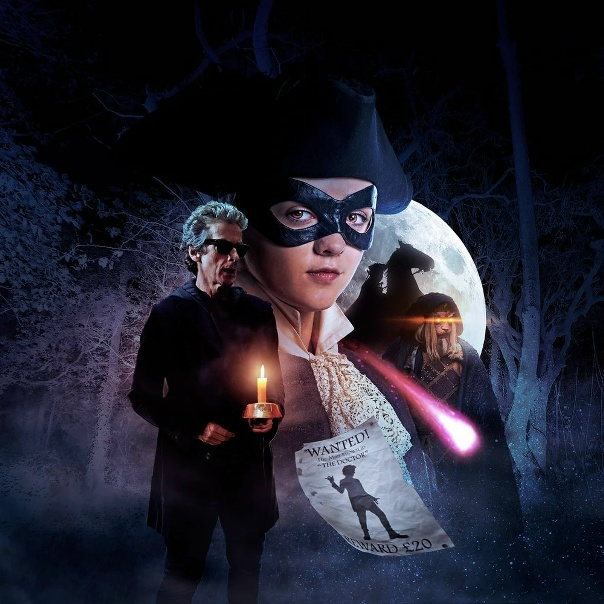

Весь 9-й сезон (12 серий)
 | Весь 9-й сезон (12 серий) |
The Woman Who Lived
Дата выхода: 24 октября 2015
Формат: 45-минутный эпизод
| Варианты озвучек: | * Разные: смотрите по инструкции |
|---|---|
| Скачивание и просмотр: |
Англия, 1651 год. Беспощадный разбойник по прозвищу «Кошмар» и его пособник орудуют на тёмных улицах Лондона. Но наткнувшись на добычу не из этого мира, они сталкиваются лицом к лицу с Доктором. Кто же тот, с кем состоит в сговоре Кошмар? Сумеет ли Доктор избежать виселицы и защитить планету от ужасного предательства?
